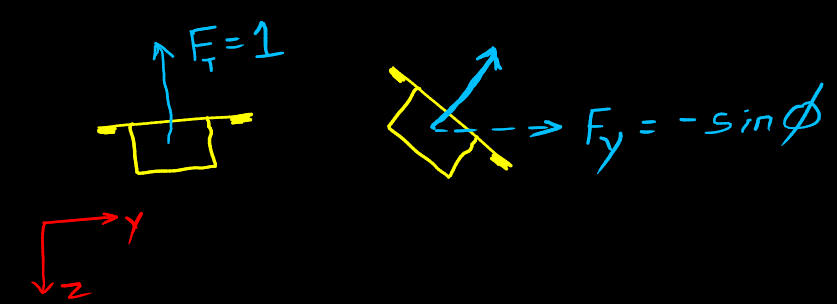
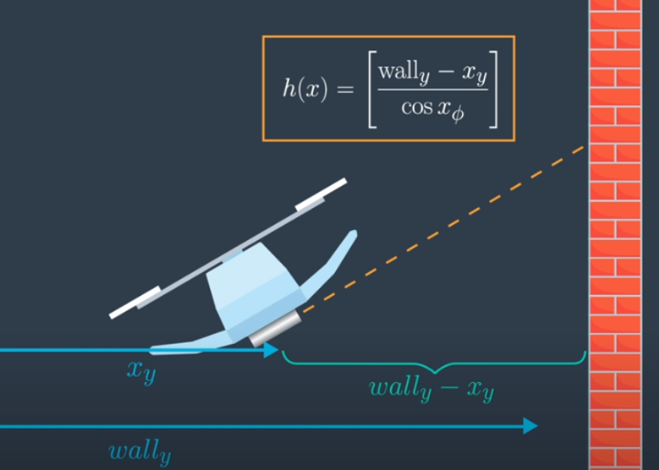

The drone will be constrained in the vertical direction, so it won't be allowed to go up or down. It is allowed to move horizontally and have a roll.
$$
x_t = \begin{bmatrix} \phi \\ \dot{y} \\ y \end{bmatrix}
\qquad
u_t = [\phi]
$$
The physics is simplified to allow for simpler math - instead of thinking of forces and moments, we're just going to have one control input which sets the roll angle directly $\phi$.

Z constrained 2d bot which moves and rolls only in Y.
The thrust is assumed to be constant and equal to 1 as is the mass. To accelerate to the right, we set some roll angle, and some portion of the thrust equal to $sin(\phi)$ will cause the vehicle to accelerate. The new $\phi$ is whatever we set the control input to be i.e. the phi component of the control input. In this example, the control input has just the 1 component.
State transition function
$$
g(x_t, u_t, \Delta{t}) =
\begin{bmatrix}
u_{t, \phi} \\
x_{t,\dot{y}} - sin(x_{t,\phi}) \times \Delta{t} \\
x_{t,y} + x_{t,\dot{y}} \times \Delta{t}
\end{bmatrix}
= \begin{bmatrix}
g_{\phi} \\
g_{\dot{y}} \\
g_y
\end{bmatrix}
$$
$- sin(x_{t,\phi})$ is the acceleration of the drone. $\phi$ is written as $x_{t,\phi}$ to emphasise that $\phi$ is part of the state vector $x$.
In the 1D case, we could write $g$ as a linear equation (constant $A_t$ times $x_t$, plus constant $B_t$ times $u_t$). $sin(x_{t,\phi})$ cannot be factored into the $A$ and $B$ matrices since they don't depend on the state, which means a Kalman Filter cannot be used as the estimation algorithm. To use a Kalman Filter here, we need a linear approximation of the system that's linearised around the current state of the vehicle.
Jacobian of the state transition function
To linearise $g$, we take its Jacobian with respect to $x$, both of which are $3 \times 1$ vectors. The result is a $3 \times 3$ matrix of partial derivatives. The Jacobian tells us how each component of $g$ changes as each component of the state vector is changed.
$$\begin{align*}
g'(x_t, u_t, \Delta{t}) &=
\begin{bmatrix}
\frac{\partial{g_{\phi}}}{\partial{x_{\phi}}}
& \frac{\partial{g_{\phi}}}{\partial{x_{\dot{y}}}}
& \frac{\partial{g_{\phi}}}{\partial{x_{y}}}
\\
\frac{\partial{g_{\dot{y}}}}{\partial{x_{\phi}}}
& \frac{\partial{g_{\dot{y}}}}{\partial{x_{\dot{y}}}}
& \frac{\partial{g_{\dot{y}}}}{\partial{x_{y}}}
\\
\frac{\partial{g_{y}}}{\partial{x_{\phi}}}
& \frac{\partial{g_{y}}}{\partial{x_{\dot{y}}}}
& \frac{\partial{g_{y}}}{\partial{x_{y}}}
\end{bmatrix} \\
&= \begin{bmatrix}
0 & 0 & 0 \\
-cos(x_{\phi})\Delta{t} & 1 & 0 \\
0 & \Delta{t} & 1
\end{bmatrix}
\end{align*}$$
In the first row of the Jacobian, the partial derivatives of the $\phi$ component of $g$ is calculated with respect to each component of $x$
In the linear 1D example where the state transition function is linear, the derivative of $g$ with respect to $x$ is just the $A$ matrix which doesn't depend on the vehicle's state. Here, however, the derivative matrix changes due to its dependence on the vehicle's state ($\phi$ in this case). In general, the Jacobian represents the best linear approximation of the state transition function near the state $x$.
Non linear measurement model

Non linear measurement model
Consider a big vertical wall that extends infinitely upwards and downwards, at some position $wall_{y}$. The drone has a range sensor that points to the right and measures the distance to the wall. When the drone's roll angle is 0, the sensor should give a nominal measured value of $wall_{y}$, minus the drone's y position, $x_{y}$. If the drone rolls by some angle $>0$, then the sensor should nominally return some number greater than $wall_{y} - x_y$.
The true sensor measurement will be noisy. The measurement model takes a state (can be the estimated one) as input and returns an expected value of what the sensor will read:
$$
h(x) = \begin{bmatrix}
\frac{wall_{y} - x_y}{cos{x_{\phi}}}
\end{bmatrix}
$$
Jacobian of the measurement model
$h$ is non-linear since it has a $cos$. To use the measurement model in an EKF, we need to linearise the model around the current state.
The Jacobian will be the derivative of the measurement model ($1 \times 1$) with respect to the state vector ($1 \times 3$), which will result in a $1 \times 3$ matrix with elements that are the partial derivatives of $h$ w.r.t. the different components of the state vector.
For the Kalman filter predict function, $G_t$ was constant and just equal to the $A$ matrix. The g prime function wasn't very interesting since it actually ignored the current state of the vehicle. But with the non-linear case, the Jacobian is calculated in every predict step, which is then used to propagate the covariance forward.
EKF Update
$H_t$ is used to compute the Kalman gain which is used to compare the measurement with the expected measurement $h(\bar{\mu}_t$) similar to KF.